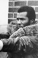
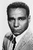

Country:United States, 94 minutes
Spoken languages:English
Genres:Action
Director(s):Arthur Marks
Writer(s):Bob Ellison
Video Codec:Unknown
Number: 2877


Certification:R
Storyline:
Duke Johnson visits a small Southern town, intent on burying his brother. After the funeral, he learns that he must stay for 60 days, for the estate to be processed. A few locals convince Duke to reopen his late brother's nightclub, and soon the local redneck policemen are intimidating Duke with threats of violence. Duke refuses to pay the bribes they demand, so then he and his lady friend Aretha are threatened and attacked by the crooked cops. Rather than take them on himself, Duke calls on his old pal Roy. Roy brings a few buddies to Bucktown, and they bring justice to the small town. With the redneck cops out of the way, Duke lets his guard down. Then the situation gets out of hand again. Finally, Duke must settle the score himself.
Cast:  


Medium: VHS tape,
Loaned: No
Aspect ratio: Unknown